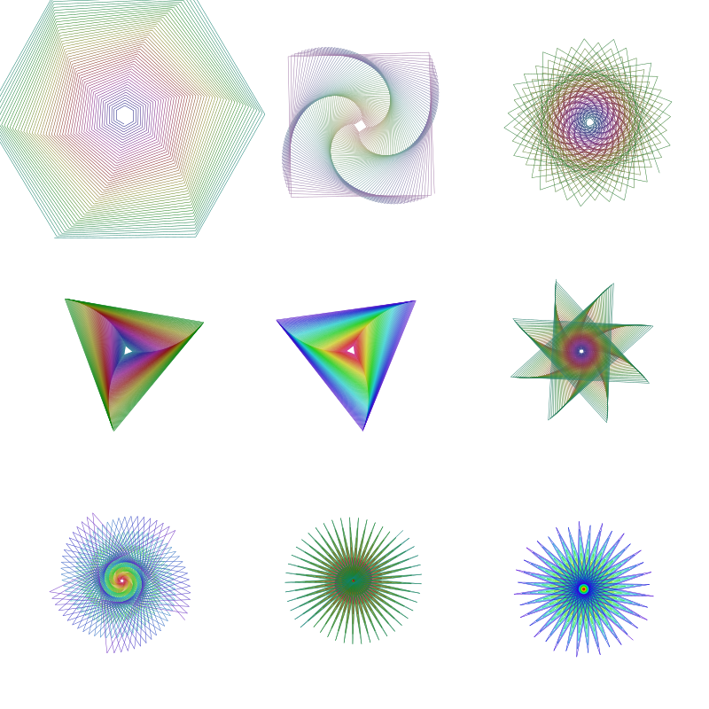

Turtle graphics
Some simple "turtle graphics" functions are included. Functions to control the turtle begin with a capital letter: Forward, Turn, Circle, Orientation, Towards, Rectangle, Pendown, Penup, Pencolor, Penwidth, and Reposition, and so on, and angles are specified in degrees.
using Luxor, Colors
Drawing(600, 400, "assets/figures/turtles.png")
origin()
background("midnightblue")
üê¢ = Turtle() # you can type the turtle emoji with \:turtle:
Pencolor(üê¢, "cyan")
Penwidth(üê¢, 1.5)
n = 5
for i in 1:400
global n
Forward(üê¢, n)
Turn(üê¢, 89.5)
HueShift(üê¢)
n += 0.75
end
fontsize(20)
Message(üê¢, "finished")
finish()
The turtle commands expect a reference to a turtle as the first argument (it doesn't have to be a turtle emoji!), and you can have any number of turtles active at a time.
quantity = 9
turtles = [Turtle(O, true, 2π * rand(), (rand(), rand(), 0.5)...) for i in 1:quantity]
Reposition.(turtles, first.(collect(Tiler(800, 800, 3, 3))))
n = 10
Penwidth.(turtles, 0.5)
for i in 1:300
global n
Forward.(turtles, n)
HueShift.(turtles)
Turn.(turtles, [60.1, 89.5, 110, 119.9, 120.1, 135.1, 145.1, 176, 190])
n += 0.5
end
finish() # hide
A turtle graphics approach lends itself well to recursive programming. This short recursive function draws a Hilbert curve.
function hilbert(t::Turtle, level, angle, lengthstep)
level == 0 && return
HueShift(t, 0.1)
Turn(t, angle)
hilbert(t, level-1, -angle, lengthstep)
Forward(t, lengthstep)
Turn(t, -angle)
hilbert(t, level-1, angle, lengthstep)
Forward(t, lengthstep)
hilbert(t, level-1, angle, lengthstep)
Turn(t, -angle)
Forward(t, lengthstep)
hilbert(t, level-1, -angle, lengthstep)
Turn(t, angle)
end
@draw begin
background("black")
setline(2)
setlinecap("round")
hilbert(Turtle(first(BoundingBox()) + (12, 12), true, 0, (1, 0, 0)),
6, # level
90, # turn angle, in degrees
6 # steplength
)
end
Luxor.Turtle — TypeTurtle()
Turtle(O)
Turtle(0, 0)
Turtle(O, pendown=true, orientation=0, pencolor=(1.0, 0.25, 0.25))Create a Turtle. You can command a turtle to move and draw "turtle graphics".
The commands (unusually for Julia) start with a capital letter, and angles are specified in degrees.
Basic commands are Forward(), Turn(), Pendown(), Penup(), Pencolor(), Penwidth(), Circle(), Orientation(), Rectangle(), and Reposition().
Others include Push(), Pop(), Message(), HueShift(), Randomize_saturation(), Reposition(), and Pen_opacity_random().
Luxor.Forward — FunctionForward(t::Turtle, d=1)Move the turtle forward by d units. The stored position is updated.
Luxor.Turn — FunctionTurn(t::Turtle, r=5.0)Increase the turtle's rotation by r degrees. See also Orientation.
Luxor.Circle — FunctionCircle(t::Turtle, radius=1.0)Draw a filled circle centered at the current position with the given radius.
Luxor.HueShift — FunctionHueShift(t::Turtle, inc=1.0)Shift the Hue of the turtle's pen forward by inc. Hue values range between 0 and 360. (Don't start with black, otherwise the saturation and brightness values will be black.)
Luxor.Message — FunctionMessage(t::Turtle, txt)Write some text at the current position.
Luxor.Orientation — FunctionOrientation(t::Turtle, r=0.0)Set the turtle's orientation to r degrees. See also Turn.
Luxor.Towards — FunctionTowards(t::Turtle, pos::Point)Rotate the turtle to face towards a given point.
Luxor.Randomize_saturation — FunctionRandomize_saturation(t::Turtle)Randomize the saturation of the turtle's pen color.
Luxor.Rectangle — FunctionRectangle(t::Turtle, width=10.0, height=10.0)Draw a filled rectangle centered at the current position with the given radius.
Luxor.Pen_opacity_random — FunctionPen_opacity_random(t::Turtle)Change the opacity of the pen to some value at random.
Luxor.Pendown — FunctionPendown(t::Turtle)Put that pen down and start drawing.
Luxor.Penup — FunctionPenup(t::Turtle)Pick that pen up and stop drawing.
Luxor.Pencolor — FunctionPencolor(t::Turtle, r, g, b)Set the Red, Green, and Blue colors of the turtle.
Luxor.Penwidth — FunctionPenwidth(t::Turtle, w)Set the width of the line drawn.
Luxor.Point — TypeThe Point type holds two coordinates. It's immutable, you can't change the values of the x and y values directly.
Luxor.Pop — FunctionPop(t::Turtle)Lift the turtle's position and orientation off a stack.
Luxor.Push — FunctionPush(t::Turtle)Save the turtle's position and orientation on a stack.
Luxor.Reposition — FunctionReposition(t::Turtle, pos::Point)
Reposition(t::Turtle, x, y)Reposition: pick the turtle up and place it at another position.